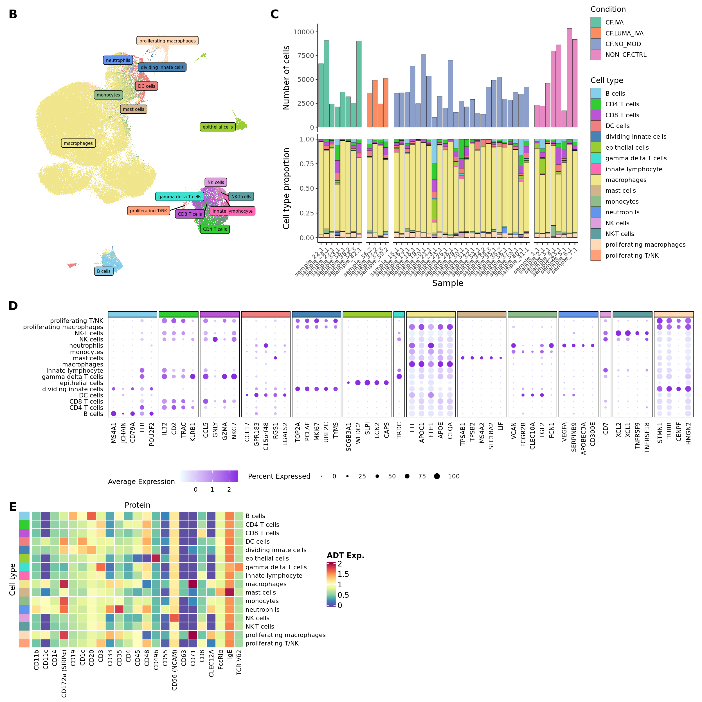

Figure 1
Jovana Maksimovic
February 17, 2025
Last updated: 2025-02-17
Checks: 7 0
Knit directory: paed-inflammation-CITEseq/
This reproducible R Markdown analysis was created with workflowr (version 1.7.1). The Checks tab describes the reproducibility checks that were applied when the results were created. The Past versions tab lists the development history.
Great! Since the R Markdown file has been committed to the Git repository, you know the exact version of the code that produced these results.
Great job! The global environment was empty. Objects defined in the global environment can affect the analysis in your R Markdown file in unknown ways. For reproduciblity it’s best to always run the code in an empty environment.
The command set.seed(20240216) was run prior to running
the code in the R Markdown file. Setting a seed ensures that any results
that rely on randomness, e.g. subsampling or permutations, are
reproducible.
Great job! Recording the operating system, R version, and package versions is critical for reproducibility.
Nice! There were no cached chunks for this analysis, so you can be confident that you successfully produced the results during this run.
Great job! Using relative paths to the files within your workflowr project makes it easier to run your code on other machines.
Great! You are using Git for version control. Tracking code development and connecting the code version to the results is critical for reproducibility.
The results in this page were generated with repository version 0246a56. See the Past versions tab to see a history of the changes made to the R Markdown and HTML files.
Note that you need to be careful to ensure that all relevant files for
the analysis have been committed to Git prior to generating the results
(you can use wflow_publish or
wflow_git_commit). workflowr only checks the R Markdown
file, but you know if there are other scripts or data files that it
depends on. Below is the status of the Git repository when the results
were generated:
Ignored files:
Ignored: .Rhistory
Ignored: .Rproj.user/
Ignored: analysis/obsolete/
Ignored: data/.DS_Store
Ignored: data/C133_Neeland_batch1/
Ignored: data/C133_Neeland_merged/
Ignored: output/dge_analysis/obsolete/
Ignored: renv/library/
Ignored: renv/staging/
Untracked files:
Untracked: analysis/16.1_Figure_2.Rmd
Untracked: analysis/16.2_Figure_3.Rmd
Untracked: analysis/16.3_Figure_4.Rmd
Untracked: analysis/16.4_Figure_5.Rmd
Untracked: analysis/16.5_Supplementary_Figure_ADTs.Rmd
Untracked: analysis/cellxgene_submission.Rmd
Untracked: analysis/cellxgene_submission.nb.html
Untracked: broad_markers_seurat.csv
Untracked: code/background_job.R
Untracked: code/reverse_modifier_severity_comparisons.sh
Untracked: data/.Rprofile
Untracked: data/.gitattributes
Untracked: data/.gitignore
Untracked: data/.renvignore
Untracked: data/Homo_sapiens.gene_info.gz
Untracked: data/analysis/
Untracked: data/cellxgene_cell_ontologies_ann_level_1.xlsx
Untracked: data/cellxgene_cell_ontologies_ann_level_3 (1).xlsx
Untracked: data/cellxgene_cell_ontologies_ann_level_3.xlsx
Untracked: data/code/
Untracked: data/data/
Untracked: data/homologs.rds
Untracked: data/intermediate_objects/CD4 T cells.CF_samples.fit.rds
Untracked: data/intermediate_objects/CD4 T cells.all_samples.fit.rds
Untracked: data/intermediate_objects/CD8 T cells.CF_samples.fit.rds
Untracked: data/intermediate_objects/CD8 T cells.all_samples.fit.rds
Untracked: data/intermediate_objects/DC cells.CF_samples.fit.rds
Untracked: data/intermediate_objects/DC cells.all_samples.fit.rds
Unstaged changes:
Modified: .gitignore
Modified: analysis/06.0_azimuth_annotation.Rmd
Modified: analysis/09.0_integrate_cluster_macro_cells.Rmd
Modified: analysis/13.1_DGE_analysis_macro-alveolar.Rmd
Modified: analysis/13.7_DGE_analysis_macro-proliferating.Rmd
Modified: analysis/15.0_proportions_analysis_ann_level_1.Rmd
Deleted: analysis/99.0_Figure_1.Rmd
Deleted: analysis/99.0_Figure_2.Rmd
Deleted: analysis/99.0_Figure_3.Rmd
Deleted: analysis/99.0_Figure_4.Rmd
Deleted: analysis/99.0_Figure_5.Rmd
Deleted: analysis/99.0_Supplementary_Figure_3-5.Rmd
Deleted: analysis/99.0_Supplementary_Figure_ADTs.Rmd
Modified: code/utility.R
Note that any generated files, e.g. HTML, png, CSS, etc., are not included in this status report because it is ok for generated content to have uncommitted changes.
These are the previous versions of the repository in which changes were
made to the R Markdown (analysis/16.0_Figure_1.Rmd) and
HTML (docs/16.0_Figure_1.html) files. If you’ve configured
a remote Git repository (see ?wflow_git_remote), click on
the hyperlinks in the table below to view the files as they were in that
past version.
| File | Version | Author | Date | Message |
|---|---|---|---|---|
| Rmd | 0246a56 | Jovana Maksimovic | 2025-02-17 | wflow_publish("analysis/16.0_Figure_1.Rmd") |
Load libraries.
suppressPackageStartupMessages({
library(SingleCellExperiment)
library(edgeR)
library(tidyverse)
library(ggplot2)
library(Seurat)
library(glmGamPoi)
library(dittoSeq)
library(here)
library(clustree)
library(patchwork)
library(AnnotationDbi)
library(org.Hs.eg.db)
library(glue)
library(speckle)
library(tidyHeatmap)
library(paletteer)
library(dsb)
library(ggh4x)
library(readxl)
})
source(here("code/utility.R"))Load data
files <- list.files(here("data/C133_Neeland_merged"),
pattern = "C133_Neeland_full_clean.*(macrophages|t_cells|other_cells)_annotated_diet.SEU.rds",
full.names = TRUE)
seuLst <- lapply(files[2:4], function(f) readRDS(f))
seu <- merge(seuLst[[1]],
y = c(seuLst[[2]],
seuLst[[3]]))
seuAn object of class Seurat
21568 features across 194407 samples within 1 assay
Active assay: RNA (21568 features, 0 variable features)rm(seuLst)
gc() used (Mb) gc trigger (Mb) max used (Mb)
Ncells 12102640 646.4 19472425 1040.0 13746787 734.2
Vcells 1354182863 10331.6 3693777927 28181.3 3551516627 27096.0Prepare figure panels
Data integration
Visualise batch effects.
seu <- ScaleData(seu) %>%
FindVariableFeatures() %>%
RunPCA(dims = 1:30, verbose = FALSE) %>%
RunUMAP(dims = 1:30, verbose = FALSE)DimPlot(seu, group.by = "Batch", reduction = "umap")
#cluster_pal <- "ggsci::category20_d3"
cluster_pal <- "miscpalettes::pastel"
DimPlot(seu, group.by = "ann_level_1", reduction = "umap") +
theme(legend.direction = "vertical",
legend.text = element_text(size = 10)) +
scale_color_paletteer_d(palette = cluster_pal)
Cell cycle effect
Assign each cell a score, based on its expression of G2/M and S phase markers as described in the Seurat workflow here.
s.genes <- cc.genes.updated.2019$s.genes
g2m.genes <- cc.genes.updated.2019$g2m.genes
seu <- CellCycleScoring(seu, s.features = s.genes, g2m.features = g2m.genes,
set.ident = TRUE)PCA of cell cycle genes.
DimPlot(seu, group.by = "Phase") -> p1
seu %>%
RunPCA(features = c(s.genes, g2m.genes),
dims = 1:30, verbose = FALSE) %>%
DimPlot(reduction = "pca") -> p2
(p2 / p1) + plot_layout(guides = "collect")
Distribution of cell cycle markers.
# Visualize the distribution of cell cycle markers across
RidgePlot(seu, features = c("PCNA", "TOP2A", "MCM6", "MKI67"), ncol = 2,
log = TRUE)
Using the Seurat Alternate Workflow from here,
calculate the difference between the G2M and S phase scores so that
signals separating non-cycling cells and cycling cells will be
maintained, but differences in cell cycle phase among proliferating
cells (which are often uninteresting), can be regressed out of the
data.
seu$CC.Difference <- seu$S.Score - seu$G2M.ScoreIntegrate RNA data
Split by batch for integration. Normalise with
SCTransform. Increase the strength of alignment by
increasing k.anchor parameter to 20 as recommended in
Seurat Fast integration with RPCA vignette.
First, integrate the RNA data.
out <- here("data",
"C133_Neeland_merged",
glue("C133_Neeland_full_clean_integrated_all_cells.SEU.rds"))
gns <- AnnotationDbi::select(org.Hs.eg.db,
keys = rownames(seu),
columns = c("CHR","ENTREZID"),
keytype = "SYMBOL",
multiVals = "first")
m <- match(rownames(seu), gns$SYMBOL)
gns <- gns[m,]
# remove HLA, immunoglobulin, MT, RP, MRP and sex genes prior to integration
var_regex = '^HLA-|^IG[HJKL]|^MT-|^RPL|^MRPL'
keep <- !(str_detect(rownames(seu), var_regex) | gns$CHR %in% c("X","Y"))
seu <- seu[keep,]
if(!file.exists(out)){
DefaultAssay(seu) <- "RNA"
VariableFeatures(seu) <- NULL
seu[["pca"]] <- NULL
seu[["umap"]] <- NULL
seuLst <- SplitObject(seu, split.by = "Batch")
rm(seu)
gc()
# normalise with SCTransform and regress out cell cycle score difference
seuLst <- lapply(X = seuLst, FUN = SCTransform, method = "glmGamPoi",
vars.to.regress = "CC.Difference")
# integrate RNA data
features <- SelectIntegrationFeatures(object.list = seuLst,
nfeatures = 3000)
seuLst <- PrepSCTIntegration(object.list = seuLst, anchor.features = features)
seuLst <- lapply(X = seuLst, FUN = RunPCA, features = features)
anchors <- FindIntegrationAnchors(object.list = seuLst,
normalization.method = "SCT",
anchor.features = features,
dims = 1:30, reduction = "rpca")
seu <- IntegrateData(anchorset = anchors,
normalization.method = "SCT",
dims = 1:30)
DefaultAssay(seu) <- "integrated"
seu <- RunPCA(seu, dims = 1:30, verbose = FALSE) %>%
RunUMAP(dims = 1:30, verbose = FALSE)
saveRDS(seu, file = out)
fs::file_chmod(out, "664")
if(any(str_detect(fs::group_ids()$group_name,
"oshlack_lab"))) fs::file_chown(out,
group_id = "oshlack_lab")
} else {
seu <- readRDS(file = out)
}seu <- subset(seu, cells = which(seu$ann_level_2 != "macro-T"))options(ggrepel.max.overlaps = Inf)
DimPlot(seu,
group.by = "ann_level_1", label = F, repel = T,
label.size = 3) +
scale_color_paletteer_d(cluster_pal, direction = 1) +
NoLegend() -> p1
LabelClusters(p1, id = "ann_level_1", repel = TRUE,
size = 2, box = TRUE, fontfamily = "arial") +
theme(axis.title = element_blank(),
axis.text = element_blank(),
axis.ticks = element_blank(),
axis.line = element_blank(),
plot.title = element_blank()) -> f1b
f1b
Cell proportions by sample
seu@meta.data %>%
dplyr::select(sample.id, Group) %>%
count(sample.id, Group) %>%
ungroup() %>%
ggplot(aes(x = sample.id, y = n, fill = Group)) +
geom_bar(stat = "identity", color = "black", size = 0.1) +
theme_classic() +
theme(axis.text.x = element_blank(),
axis.title.x = element_blank(),
axis.ticks.x = element_blank(),
axis.line.x = element_blank(),
strip.text = element_blank(),
strip.background = element_blank(),
plot.margin = unit(c(0, 0, 0, 0), "lines")) +
labs(y = "Number of cells", fill = "Condition") +
scale_fill_paletteer_d("RColorBrewer::Set2", direction = 1) +
facet_grid(~Group, scales = "free_x", space = "free_x") -> p2
props <- getTransformedProps(clusters = seu$ann_level_1,
sample = seu$sample.id, transform="asin")
props$Proportions %>%
data.frame %>%
inner_join(seu@meta.data %>%
dplyr::select(sample.id,
Group),
by = c("sample" = "sample.id")) %>%
distinct() %>%
ggplot(aes(x = sample, y = Freq, fill = clusters)) +
geom_bar(stat = "identity", color = "black", size = 0.1) +
theme_classic() +
theme(axis.text.x = element_text(angle = 45,
vjust = 1,
hjust = 1,
size = 8),
strip.text = element_blank(),
strip.background = element_blank(),
plot.margin = unit(c(0, 0, 0, 0), "lines")) +
labs(y = "Cell type proportion", fill = "Cell type", x = "Sample") +
scale_fill_paletteer_d("miscpalettes::pastel", direction = 1) +
facet_grid(~Group, scales = "free_x", space = "free_x") -> p3
(p2 / p3) + plot_layout(guides = "collect") &
theme(legend.text = element_text(size = 8),
legend.title = element_text(size = 10),
legend.key.size = unit(1, "lines")) -> f1c
f1c
DefaultAssay(seu) <- "RNA"
Idents(seu) <- "ann_level_1"
gns <- AnnotationDbi::select(org.Hs.eg.db,
keys = rownames(seu),
columns = c("CHR","ENTREZID"),
keytype = "SYMBOL",
multiVals = "first")
m <- match(rownames(seu), gns$SYMBOL)
gns <- gns[m,]
out <- here("data/cluster_annotations/seurat_markers_all_cells.rds")
if(!file.exists(out)){
keep <- !is.na(gns$ENTREZID)
markers <- FindAllMarkers(seu, only.pos = TRUE, logfc.threshold = 0.5,
features = rownames(seu)[rownames(seu) %in% gns$SYMBOL[keep]],
max.cells.per.ident = 10000)
saveRDS(markers, file = out)
} else {
markers <- readRDS(out)
}
# labels <- readxl::read_excel(here("data/main_marker_genes.xlsx"))
#
# unnest(enframe(setNames(str_split(labels$`main marker genes`, ", "),
# labels$`cell type`),
# value = "gene",
# name = "cluster"),
# cols = gene) %>%
# arrange(cluster) %>%
# distinct() -> markers
markers <- markers[markers$gene %in% rownames(seu),]Seurat marker gene dotplot
draw_marker_gene_dotplot(seu,
markers,
"ann_level_1",
cluster_pal,
direction = 1,
num = 5) -> f1d
# DefaultAssay(seu) <- "RNA"
#
# markers %>%
# group_by(cluster) %>%
# slice_head(n = 10) %>%
# mutate(cluster = as.character(cluster)) %>%
# ungroup() %>%
# dplyr::arrange(cluster, .by_group = FALSE) -> markers
#
# d <- duplicated(markers$gene)
# markers[!d,] %>%
# group_by(cluster) %>%
# slice_head(n = 5) -> top
#
# pal <- setNames(paletteer::paletteer_d(cluster_pal),
# unique(markers$cluster))
# cell_type_cols <- pal[top$cluster]
#
# strip <- strip_themed(background_x = elem_list_rect(fill = unique(cell_type_cols)))
# DotPlot(seu,
# features = top$gene,
# group.by = "ann_level_1",
# cols = c("azure1", "blueviolet"),
# dot.scale = 3,
# assay = "SCT") +
# FontSize(x.text = 9, y.text = 9) +
# labs(y = element_blank(), x = element_blank()) +
# facet_grid2(~top$cluster,
# scales = "free_x",
# space = "free_x",
# strip = strip) +
# theme(axis.text.x = element_text(angle = 90,
# hjust = 1,
# vjust = 0.5,
# size = 8),
# axis.text.y = element_text(size = 8),
# legend.text = element_text(size = 8),
# legend.title = element_text(size = 9),
# legend.position = "right",
# strip.text = element_text(size = 0),
# text = element_text(family = "arial"),
# axis.ticks = element_blank(),
# axis.line = element_blank(),
# panel.spacing = unit(2, "mm")) -> f1d
f1d
files <- list.files(here("data/C133_Neeland_merged"),
pattern = "C133_Neeland_full_clean.*(macrophages|t_cells|other_cells)_annotated_full.SEU.rds",
full.names = TRUE)
seuLst <- lapply(files[2:4], function(f) readRDS(f))
adt_names <- rownames(seuLst[[1]][["ADT"]]@counts)
seuLst <- lapply(seuLst, function(s){
DefaultAssay(s) <- "ADT"
if(!all(rownames(s) == adt_names)){
adt_counts <- s[["ADT"]]@counts
rownames(adt_counts) <- adt_names
CreateSeuratObject(counts = adt_counts,
assay = "ADT",
meta.data = s@meta.data)
} else {
DietSeurat(s, assays = "ADT", dimreducs = NULL)
}
})
seuADT <- merge(seuLst[[1]],
y = c(seuLst[[2]],
seuLst[[3]]))
seuADT <- seuADT[, seuADT$Batch != 0]
seuADTAn object of class Seurat
163 features across 168859 samples within 1 assay
Active assay: ADT (163 features, 0 variable features)Visualise ADTs
Make data frame of proteins, clusters, expression levels.
out <- here("data",
"C133_Neeland_merged",
glue("C133_Neeland_full_clean_all_cells_dsb.ADT.rds"))
read_csv(file = here("data",
"C133_Neeland_batch1",
"data",
"sample_sheets",
"ADT_features.csv")) -> adt_data
pattern <- "anti-human/mouse |anti-human/mouse/rat |anti-mouse/human "
adt_data$name <- gsub(pattern, "", adt_data$name)
if(!file.exists(out)){
adt_data %>%
dplyr::filter(grepl("[Ii]sotype", name)) %>%
pull(name) -> isotype_controls
# normalise ADT using DSB normalisation
adt_dsb <- ModelNegativeADTnorm(cell_protein_matrix = seuADT[["ADT"]]@counts,
denoise.counts = TRUE,
use.isotype.control = TRUE,
isotype.control.name.vec = isotype_controls)
saveRDS(adt_dsb, file = out)
} else {
adt_dsb <- readRDS(out)
}
seuADT[["ADT"]]@data <- adt_dsb
seuADTAn object of class Seurat
163 features across 168859 samples within 1 assay
Active assay: ADT (163 features, 0 variable features)# ADTs <- read_csv(file = here("data",
# "Proteins_broad_22.04.22.csv"))
# pattern <- "anti-human/mouse |anti-human/mouse/rat |anti-mouse/human |anti-human "
# ADTs$Description <- gsub(pattern, "", ADTs$Description)
labels <- readxl::read_excel(here("data/main_proteins.xlsx"))
unnest(enframe(setNames(str_split(labels$`main proteins`, ", "),
labels$`cell type`),
value = "ADT",
name = "cluster"),
cols = ADT) %>%
arrange(cluster) %>%
distinct() -> markers
markers <- markers[markers$ADT %in% rownames(seuADT),]
seuADT@meta.data %>%
dplyr::select(ann_level_1) %>%
rownames_to_column(var = "cell") %>%
inner_join(as.data.frame(t(seuADT[["ADT"]]@data)) %>%
rownames_to_column(var = "cell")) %>%
pivot_longer(c(-cell, -ann_level_1),
names_to = "ADT",
values_to = "Expression") %>%
dplyr::group_by(ann_level_1, ADT) %>%
dplyr::summarize(Expression = mean(Expression)) %>%
ungroup() %>%
dplyr::filter(ADT %in% markers$ADT) -> dat
plot(density(dat$Expression))
dat %>%
dplyr::rename("Protein" = "ADT",
"ADT Exp." = "Expression",
"Cell type" = "ann_level_1") %>%
tidyHeatmap::heatmap(
.column = Protein,
.row = `Cell type`,
.value = `ADT Exp.`,
scale = "none",
rect_gp = grid::gpar(col = "white", lwd = 1),
show_row_names = TRUE,
cluster_rows = FALSE,
cluster_columns = FALSE,
column_names_gp = grid::gpar(fontsize = 8, fontfamily = "arial"),
column_title_gp = grid::gpar(fontsize = 10, fontfamily = "arial"),
row_names_gp = grid::gpar(fontsize = 8, fontfamily = "arial"),
row_title_gp = grid::gpar(fontsize = 10, fontfamily = "arial"),
column_title_side = "top",
palette_value = circlize::colorRamp2(seq(0, 2, length.out = 11),
rev(RColorBrewer::brewer.pal(11, "Spectral"))),
heatmap_legend_param = list(direction = "vertical")) %>%
add_tile(`Cell type`, show_legend = FALSE,
show_annotation_name = FALSE,
palette = paletteer_d("miscpalettes::pastel",
length(unique(seuADT$ann_level_1)))) %>%
as_ComplexHeatmap() -> f1e
f1e
Figure 1
layout = "
BBBCCCCC
BBBCCCCC
BBBCCCCC
DDDDDDDD
DDDDDDDD
FFFFGGGG
FFFFGGGG
"
(wrap_elements(f1b) +
wrap_elements(f1c) +
wrap_elements(f1d) +
wrap_plots(list(f1e %>%
ComplexHeatmap::draw(heatmap_legend_side = "right") %>%
grid::grid.grabExpr())) +
plot_spacer()) +
plot_layout(design = layout) +
plot_annotation(tag_levels = list(c("B","C","D","E"))) &
theme(plot.tag = element_text(size = 16,
face = "bold",
family = "arial"))
Session info
sessionInfo()R version 4.3.3 (2024-02-29)
Platform: x86_64-pc-linux-gnu (64-bit)
Running under: Ubuntu 22.04.4 LTS
Matrix products: default
BLAS: /usr/lib/x86_64-linux-gnu/openblas-pthread/libblas.so.3
LAPACK: /usr/lib/x86_64-linux-gnu/openblas-pthread/libopenblasp-r0.3.20.so; LAPACK version 3.10.0
locale:
[1] LC_CTYPE=en_AU.UTF-8 LC_NUMERIC=C
[3] LC_TIME=en_AU.UTF-8 LC_COLLATE=en_AU.UTF-8
[5] LC_MONETARY=en_AU.UTF-8 LC_MESSAGES=en_AU.UTF-8
[7] LC_PAPER=en_AU.UTF-8 LC_NAME=C
[9] LC_ADDRESS=C LC_TELEPHONE=C
[11] LC_MEASUREMENT=en_AU.UTF-8 LC_IDENTIFICATION=C
time zone: Etc/UTC
tzcode source: system (glibc)
attached base packages:
[1] stats4 stats graphics grDevices datasets utils methods
[8] base
other attached packages:
[1] readxl_1.4.3 ggh4x_0.2.8
[3] dsb_1.0.3 paletteer_1.6.0
[5] tidyHeatmap_1.8.1 speckle_1.2.0
[7] glue_1.8.0 org.Hs.eg.db_3.18.0
[9] AnnotationDbi_1.64.1 patchwork_1.3.0
[11] clustree_0.5.1 ggraph_2.2.0
[13] here_1.0.1 dittoSeq_1.14.2
[15] glmGamPoi_1.14.3 SeuratObject_4.1.4
[17] Seurat_4.4.0 lubridate_1.9.3
[19] forcats_1.0.0 stringr_1.5.1
[21] dplyr_1.1.4 purrr_1.0.2
[23] readr_2.1.5 tidyr_1.3.1
[25] tibble_3.2.1 ggplot2_3.5.0
[27] tidyverse_2.0.0 edgeR_4.0.15
[29] limma_3.58.1 SingleCellExperiment_1.24.0
[31] SummarizedExperiment_1.32.0 Biobase_2.62.0
[33] GenomicRanges_1.54.1 GenomeInfoDb_1.38.6
[35] IRanges_2.36.0 S4Vectors_0.40.2
[37] BiocGenerics_0.48.1 MatrixGenerics_1.14.0
[39] matrixStats_1.2.0 workflowr_1.7.1
loaded via a namespace (and not attached):
[1] fs_1.6.5 spatstat.sparse_3.0-3 bitops_1.0-7
[4] httr_1.4.7 RColorBrewer_1.1-3 doParallel_1.0.17
[7] tools_4.3.3 sctransform_0.4.1 utf8_1.2.4
[10] R6_2.5.1 lazyeval_0.2.2 uwot_0.1.16
[13] GetoptLong_1.0.5 withr_3.0.0 sp_2.1-3
[16] gridExtra_2.3 progressr_0.14.0 cli_3.6.3
[19] Cairo_1.6-2 spatstat.explore_3.2-6 prismatic_1.1.1
[22] labeling_0.4.3 sass_0.4.9 spatstat.data_3.0-4
[25] ggridges_0.5.6 pbapply_1.7-2 parallelly_1.37.0
[28] rstudioapi_0.15.0 RSQLite_2.3.5 generics_0.1.3
[31] shape_1.4.6 vroom_1.6.5 ica_1.0-3
[34] spatstat.random_3.2-2 dendextend_1.17.1 Matrix_1.6-5
[37] ggbeeswarm_0.7.2 fansi_1.0.6 abind_1.4-5
[40] lifecycle_1.0.4 whisker_0.4.1 yaml_2.3.8
[43] SparseArray_1.2.4 Rtsne_0.17 grid_4.3.3
[46] blob_1.2.4 promises_1.2.1 crayon_1.5.2
[49] miniUI_0.1.1.1 lattice_0.22-5 cowplot_1.1.3
[52] KEGGREST_1.42.0 pillar_1.9.0 knitr_1.45
[55] ComplexHeatmap_2.18.0 rjson_0.2.21 future.apply_1.11.1
[58] codetools_0.2-19 leiden_0.4.3.1 getPass_0.2-4
[61] data.table_1.15.0 vctrs_0.6.5 png_0.1-8
[64] cellranger_1.1.0 gtable_0.3.4 rematch2_2.1.2
[67] cachem_1.0.8 xfun_0.42 S4Arrays_1.2.0
[70] mime_0.12 tidygraph_1.3.1 survival_3.7-0
[73] pheatmap_1.0.12 iterators_1.0.14 statmod_1.5.0
[76] ellipsis_0.3.2 fitdistrplus_1.1-11 ROCR_1.0-11
[79] nlme_3.1-164 bit64_4.0.5 RcppAnnoy_0.0.22
[82] rprojroot_2.0.4 bslib_0.6.1 irlba_2.3.5.1
[85] vipor_0.4.7 KernSmooth_2.23-24 colorspace_2.1-0
[88] DBI_1.2.1 ggrastr_1.0.2 tidyselect_1.2.1
[91] processx_3.8.3 bit_4.0.5 compiler_4.3.3
[94] git2r_0.33.0 DelayedArray_0.28.0 plotly_4.10.4
[97] scales_1.3.0 lmtest_0.9-40 callr_3.7.3
[100] digest_0.6.34 goftest_1.2-3 spatstat.utils_3.0-4
[103] rmarkdown_2.25 XVector_0.42.0 htmltools_0.5.8.1
[106] pkgconfig_2.0.3 highr_0.10 fastmap_1.1.1
[109] rlang_1.1.4 GlobalOptions_0.1.2 htmlwidgets_1.6.4
[112] shiny_1.8.0 farver_2.1.1 jquerylib_0.1.4
[115] zoo_1.8-12 jsonlite_1.8.8 mclust_6.1
[118] RCurl_1.98-1.14 magrittr_2.0.3 GenomeInfoDbData_1.2.11
[121] munsell_0.5.0 Rcpp_1.0.12 viridis_0.6.5
[124] reticulate_1.35.0 stringi_1.8.3 zlibbioc_1.48.0
[127] MASS_7.3-60.0.1 plyr_1.8.9 parallel_4.3.3
[130] listenv_0.9.1 ggrepel_0.9.5 deldir_2.0-2
[133] Biostrings_2.70.2 graphlayouts_1.1.0 splines_4.3.3
[136] tensor_1.5 hms_1.1.3 circlize_0.4.15
[139] locfit_1.5-9.8 ps_1.7.6 igraph_2.0.1.1
[142] spatstat.geom_3.2-8 reshape2_1.4.4 evaluate_0.23
[145] renv_1.0.3 BiocManager_1.30.22 tzdb_0.4.0
[148] foreach_1.5.2 tweenr_2.0.3 httpuv_1.6.14
[151] RANN_2.6.1 polyclip_1.10-6 future_1.33.1
[154] clue_0.3-65 scattermore_1.2 ggforce_0.4.2
[157] xtable_1.8-4 later_1.3.2 viridisLite_0.4.2
[160] beeswarm_0.4.0 memoise_2.0.1 cluster_2.1.6
[163] timechange_0.3.0 globals_0.16.2